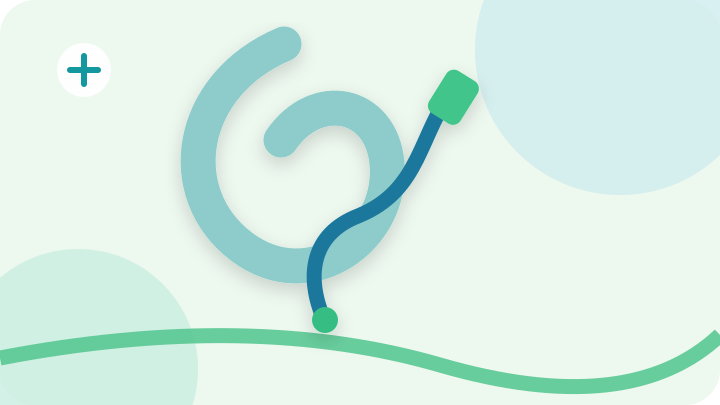

![رسم توضيحي: شفط تجمعات السوائل]()
شفط تجمعات السوائل
سحب سوائل متجمعة لأغراض تشخيصية أو علاجية حين يوصي الطبيب بذلك.
معلومات وتحضيرات الفحصإجراءات تداخلية مختارة عند الحاجة إلى سحب السوائل أو تصريفها.

يمكن استخدام تقنيات التصوير للمساعدة في الوصول إلى تجمعات السوائل وتوجيه بعض إجراءات الشفط أو وضع القساطر. يختلف الإجراء وفق موقع التجمع وحالة المريض وقرار الطبيب.
سحب سوائل متجمعة لأغراض تشخيصية أو علاجية حين يوصي الطبيب بذلك.
معلومات وتحضيرات الفحص![رسم توضيحي: تصريف السوائل بالقسطرة]()
![رسم توضيحي: الإجراءات الموجّهة بالسونار]()
استخدام التصوير المباشر للمساعدة في توجيه إبرة أو قسطرة.
معلومات وتحضيرات الفحصهذه المعلومات للتثقيف فقط، ولا تُعد توصية بإجراء الفحص أو تشخيصًا. تختلف متطلبات التحضير والتوفر وفق حالة المريض وتوجيه الطبيب. يُرجى الاتصال قبل الحضور للتأكد من الخدمة.
السبت إلى الخميس · 8 صباحًا – 10 مساءً · الجمعة إجازة
صنعاء – شارع الزبيري – برج المختبرات الدولية